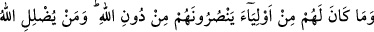
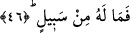

görmekten mahrum olurlar.
Meşârik’in şerhinde İbnü’l-Melek şöyle demiştir: “Ehl” kelimesi âile, evlâd, köle,
câriye, yakın akraba, dost ve arkadaşlar şeklinde tefsir edileceği gibi bunların hepsi de
birden murâd edilebilir.
et-Te’vilâtü’n-Necmiyye’ de şöyle denilir: İstidât ve kâbiliyetlerini iptal edenler,
gerçekten kendilerini ziyâna uğratanlardır. Çünkü onlar, bu kâbiliyetlerini dünyayı, onun
yaldızını, süsünü ve lezzetini taleb yolunda sarfettiler. Bunlar aynı zamanda kendi ehl ü
iyallerini de inanıp dînin hükümlerini yerine getirerek cehennem ateşinden
korumamaları yüzünden ziyâna uğrattılar.
“Zâlimler,” dünyada nefsin şehevât cehenneminde diz çökmüş olan müşrikler
“sürekli bir azap içindedirler.” Âhirette devamlı, ebedî, bâkî ve kesintisiz
azaptadırlar.
Âyetin bu son cümlesi ya müminlerin sözüdür yahut Allah tarafından müminlerin
sözünü tasdik mâhiyetinde gelmiştir.
46. Onların Allah’tan başka kendilerine yardım edecek hiçbir velîleri yoktur.
Allah kimi saptırırsa artık onun kurtuluşa çıkan bir yolu yoktur.
“Onların, Allah’tan başka kendilerine yardım edecek” onlardan azâbı kaldıracak
“hiçbir velîleri yoktur.” Halbuki dünyada bunu umuyorlardı. “Allah kimi” yoldan
“saptırırsa artık onun kurtuluşa çıkan bir yolu,” kendisini kurtuluşa götürecek bir
çaresi “yoktur.”
et-Tevilatü’n-Necmiyye’ de şöyle denmiştir: Allah kimi kendi zâtından başkasıyla
meşgul ederek sapıklıkta bırakırsa artık onu Allah’a ulaştıracak bir yol yoktur.
Zünnûn Mısrî (k.s.) şöyle demiştir: Antakya dağında bir câriye gördüm. Bana: “Sen
Zunnûn Mısrî değil misin?” dedi. Kendisine: “Beni nasıl tanıdın?” dedim. Bana: “Seni
dost mârifetiyle tanıdım” dedi. Sonra bana: “Sehâ ve cömertlik nedir?” diye sordu. Ben:
“Malını harcayıp başkasına iyilik ve ihsanda bulunmandır” dedim. Bu sefer câriye:
“Senin bahsettiğin dünya cömertliğidir. Peki din cömertliği nedir?” dedi. Ben:
“Âlemlerin rabbi olan Allah’a itâate koşmaktır” dedim. Sonra bana “bir şey ister
misin?” dedi. Ben de “evet” dedim. Bana “bire on sevap alırsın” dedi. Çünkü Allah
Teala “kim bir iyilik getirirse ona o getirdiğinin on katı vardır” (el-En’am, 6/160)
buyurmaktadır. Bana yine “cömertlik bunun neresindedir” dedi. Bu sefer ben kendisine
“peki sana göre cömertlik nedir” dedim. Bana, “cömertlik Allah’ın senin kalbine ve
gönlüne muttali olup orada kendi rızası ve sevgisinden başka bir şey görmemesidir”
dedi. Ve ilave etti: